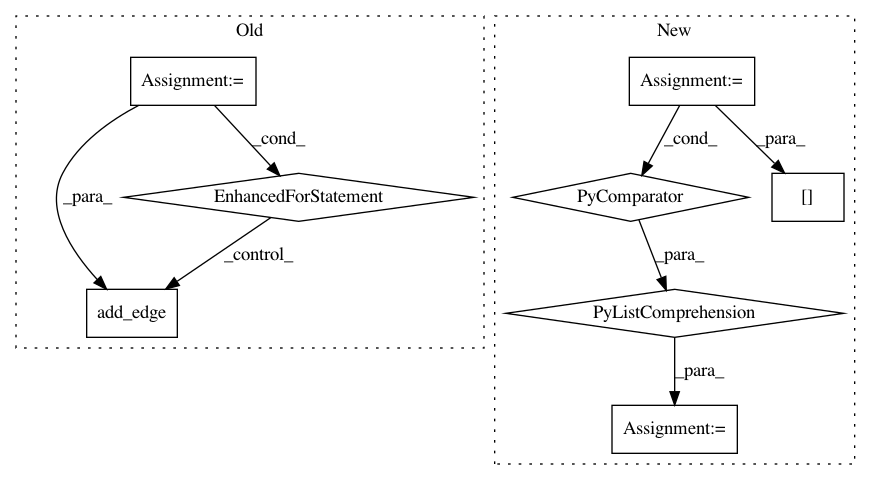

313b79ce9cc8538a78edfc82ccc7b02c23766287,osmnx/utils_graph.py,,graph_from_gdfs,#Any#Any#Any#,104
Before Change
nx.set_node_attributes(G, name=col, values=gdf_nodes[col].dropna())
// add each edge and its non-null attributes
for (u, v, k), row in gdf_edges.set_index(["u", "v", "key"]).iterrows():
d = {label: val for label, val in row.items() if isinstance(val, list) or pd.notnull(val)}
G.add_edge(u, v, k, **d)
utils.log("Created graph from node/edge GeoDataFrames")
return G
After Change
G = nx.MultiDiGraph(**graph_attrs)
attr_col_headings = [c for c in gdf_edges.columns if c not in ["u", "v"]]
attribute_data = zip(*[gdf_edges[col] for col in attr_col_headings])
multigraph_edge_keys = gdf_edges["key"]
attribute_data = zip(attribute_data, multigraph_edge_keys)
// Generate graph edges
for s, t, attrs in zip(gdf_edges["u"], gdf_edges["v"], attribute_data):
attrs, multigraph_edge_key = attrs
key = G.add_edge(s, t, key=multigraph_edge_key)
G[s][t][key].update(zip(attr_col_headings, attrs))
// Add nodes attributes
for col in gdf_nodes.columns:
nx.set_node_attributes(G, name=col, values=gdf_nodes[col].dropna())
utils.log("Created graph from node/edge GeoDataFrames")
In pattern: SUPERPATTERN
Frequency: 3
Non-data size: 8
Instances
Project Name: gboeing/osmnx
Commit Name: 313b79ce9cc8538a78edfc82ccc7b02c23766287
Time: 2020-10-20
Author: 44049940+Labulitiolle@users.noreply.github.com
File Name: osmnx/utils_graph.py
Class Name:
Method Name: graph_from_gdfs
Project Name: deepmipt/DeepPavlov
Commit Name: 6d3e4bdc22cc89fb7ecf188ccf0479632012026f
Time: 2018-04-18
Author: dilyara.rimovna@gmail.com
File Name: deeppavlov/models/evolution/check_binary_mask.py
Class Name:
Method Name: get_graph_and_plot
Project Name: deepmipt/DeepPavlov
Commit Name: 4fca544205a55010e8959bb760aece5be80dc3a5
Time: 2018-06-26
Author: dilyara.rimovna@gmail.com
File Name: deeppavlov/models/evolution/check_binary_mask.py
Class Name:
Method Name: get_graph_and_plot